A First Foray into Quant Analysis: An Elementary Pairs Trading Strategy
Strategy Overview
In this post I implement a simple pairs trading strategy based on bivariate cointegration tests in the selection phase on NASDAQ 100 equities. The selection phase will be based on data from 2018-2021. The trading & evaluation phase will be from 2021-2023. The repo is here.
I am aware of the many gaps and things not done (e.g proper screening, more creative alpha/strat, etc), but this is a basic project for learning. This project exposed me to the concepts of survivorship bias and p-hacking/data dredging.
Selection & Trading Phase
Universe & Cointegration Tests
The data used was daily data from yfinance. I didn’t adjust for corporate actions. I then select pairs based off the bivariate Engle-Granger cointegration test on the in-sample period. This regresses one series against the other to get the beta coefficient, creates the spread/residual series off it, then performs a unit root test to check for stationarity.
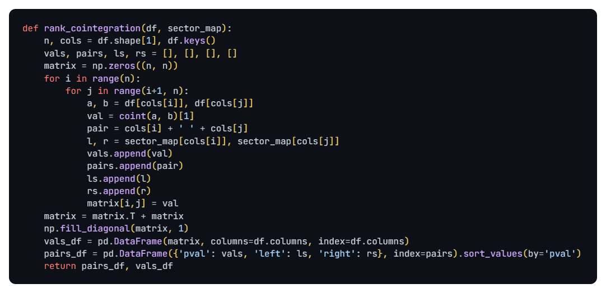This lets us select pairs which are cointegrated for the in-sample period (2018 to Jan 2021). However, more pairs and tests exposes us to multiple comparison bias, which invalides the interpretation of p-values as the number of tests increase.
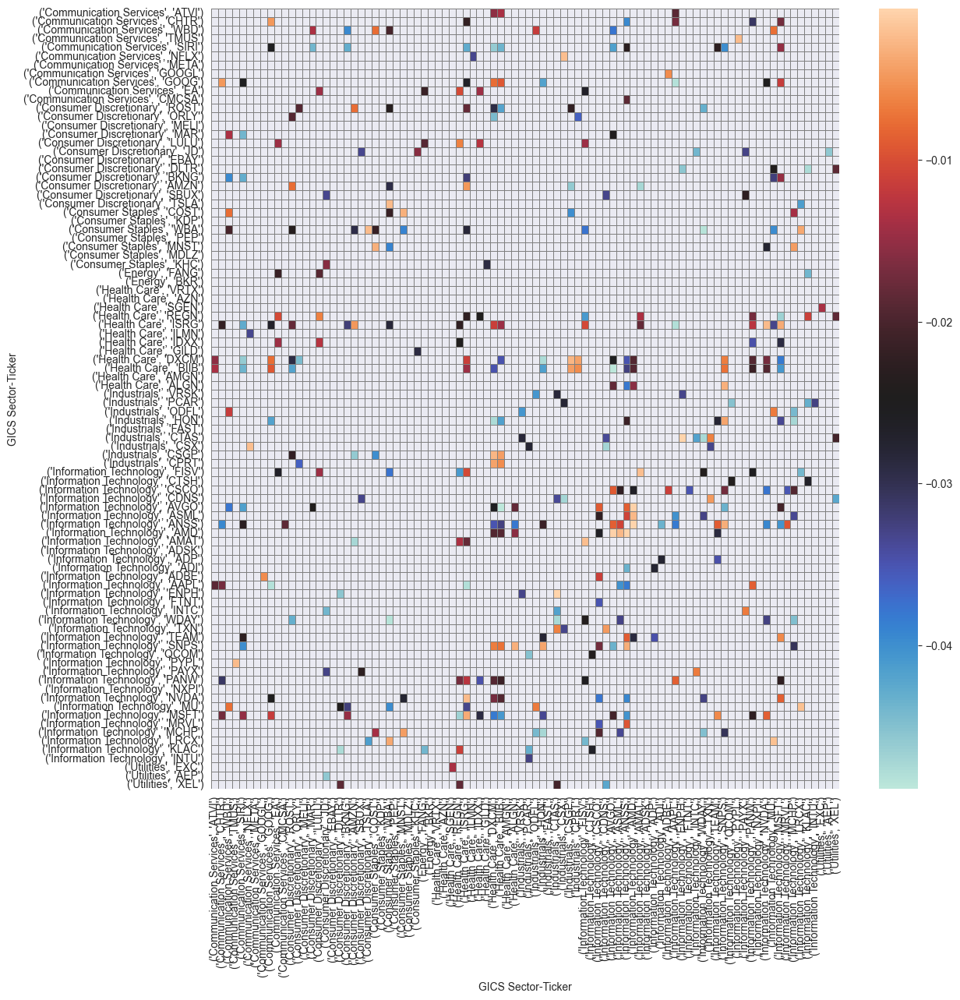Trading Phase
Once pairs are selected, we compute a spread for each pair. Then, we smooth it out, and set entry/exit thresholds. The spread is computed off a dynamic hedge ratio, evolved in online, recursive fashion via a Kalman filter (which turns out to be surprisingly effective at keeping a spread stationary even if the underlying assets are not as cointegrated!)
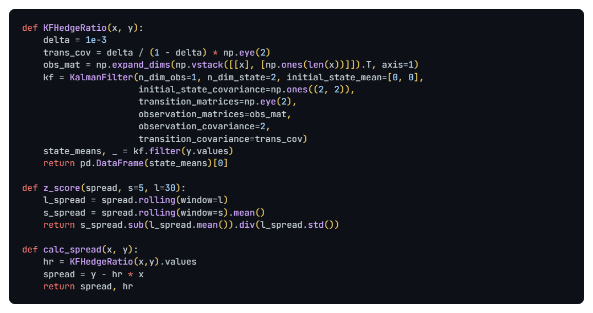The spread is then z-scored via two rolling windows. The shorter average of the past $z_s$ days is demeaned by a longer average of the past $z_l$ days, then divided by the standard deviation of $z_l$. We enter positions when this spread is above $[z,-z]$ and exit when it crosses 0. If it crosses the top, long the bottom asset and short the top asset to form the top leg, and vice versa. The parameters are thus the short (5D) and long (30D) windows and the thresholds (0.5 and -0.5).
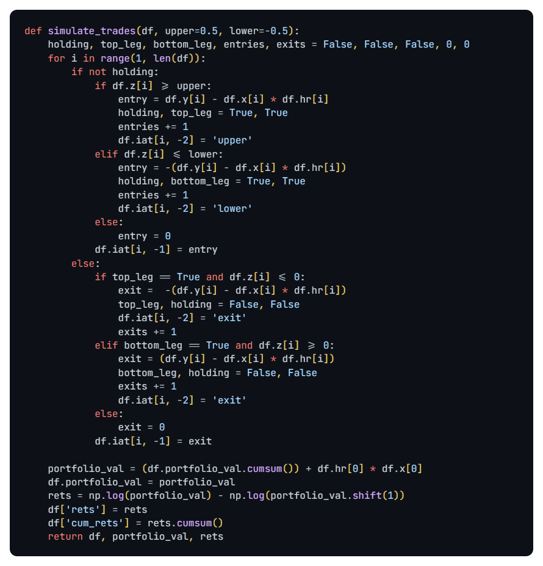Single Pair Demonstration
To illustrate, I chose an arbitrary same-sector from the backtest, INTC vs QCOM, with out-sample Sharpe of 1.467 (75th percentile) and a I.R of 0.78 (75th percentile).
Here is the price chart for the pair:
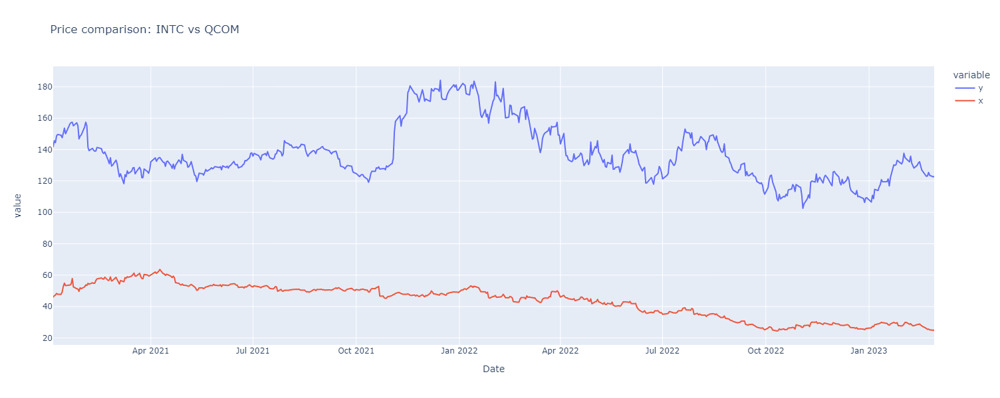The z-scored spread defines the entry and exit times:
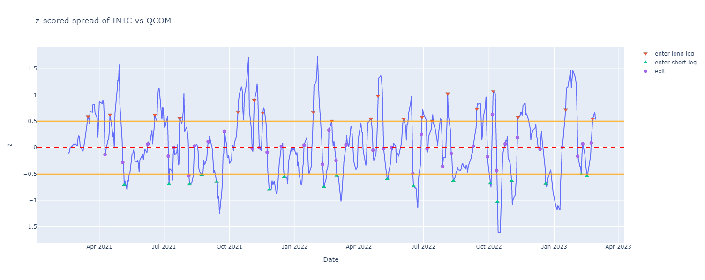Which is then reflected on the actual spread itself:
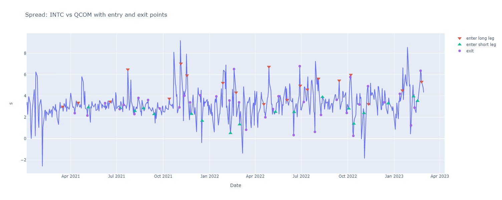Which we can track positions taken.
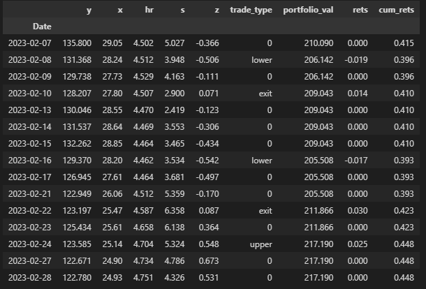We can run this simulation for all pairs in a chosen set and get the cumulative value/return for the out-of-sample period to analyze. I separated into in-sample/out-sample and same-sector/all pairs. The idea is to only screen for same-sector pairs based on a higher likelihood of some economic relationship. We'll investigate this later. In total, we have ~4000 possible pairs, but ~400 cointegrated ones according to the test statistic and 90 of those from the same-sector.
Performance
Before analyzing the relationship between sectors, cointegration and returns more closely, I first examine the out-of-sample performance (start 2021 to 2023 Feb) of selected sets of pairs.
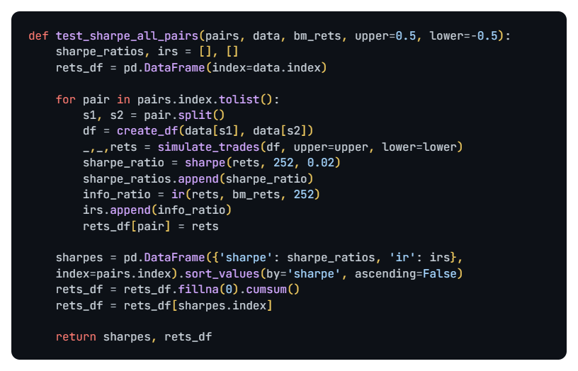Sharpe Ratio Caveats
One problem I had with calculation of returns and Sharpe was the initial capital for a pair. If we start from 0 initial capital, the first few months tends to give very volatile returns. Returns for the first few round trip trades tend to be disproportionate, despite portfolio value changing very little, as seen by the equity curve. This increases volatility and compresses the Sharpe ratio calculation.
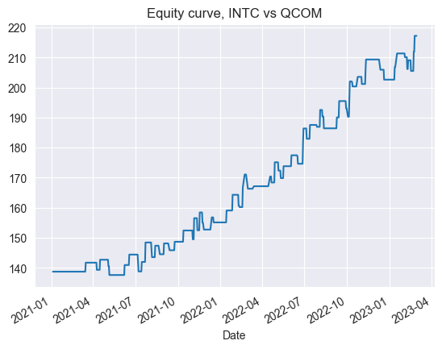I decided to smooth it out by starting with initial capital equal to the hedge ratio times the stock price at the start of the period. I’m not sure if this is corrrect.
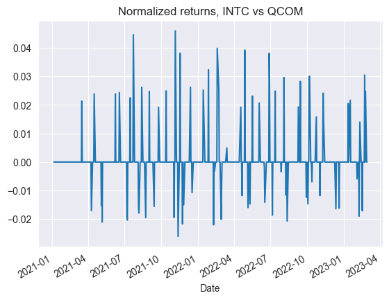Sector vs No Sector Restriction Performance
I then iterated through all selected pairs with a p-value less than the arbitary cutoff of 0.10: ~430 pairs with no sector restriction and ~96 pairs with sector restriction.
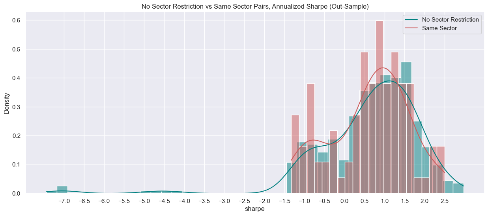The average mean and median annualized Sharpe for both sets of pairs was roughly the same ~0.60, and ~0.82. However, from the histogram, it is evident the no-sector restriction pairs has an extreme left tail of poor performers while the same-sector pairs had a floor on bad performance. This would support the hypothesis that cointegrated same-sector pairs are less likely to perform poorly out-sample because they have a higher likelihood of some underlying economic relationship.
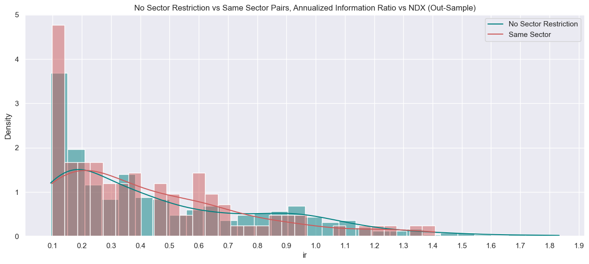IR was decent with a median of ~0.35 and a mean of ~0.45, beating the benchmark. However, I am not sure if IR is relevant here because pairs trading is market neutral anyway. We can then plot cumulative (mean) returns against the benchmark:
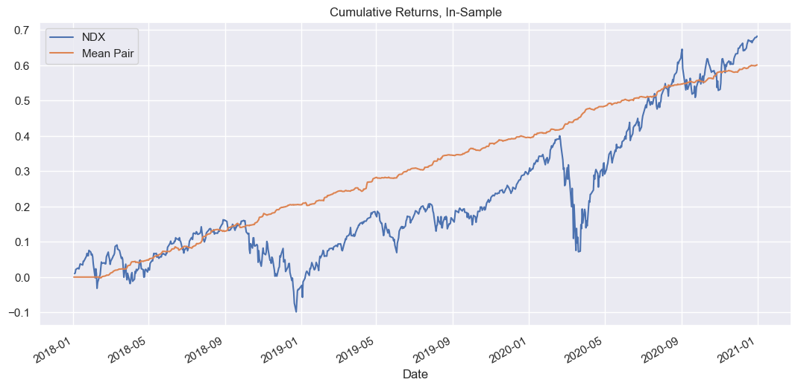 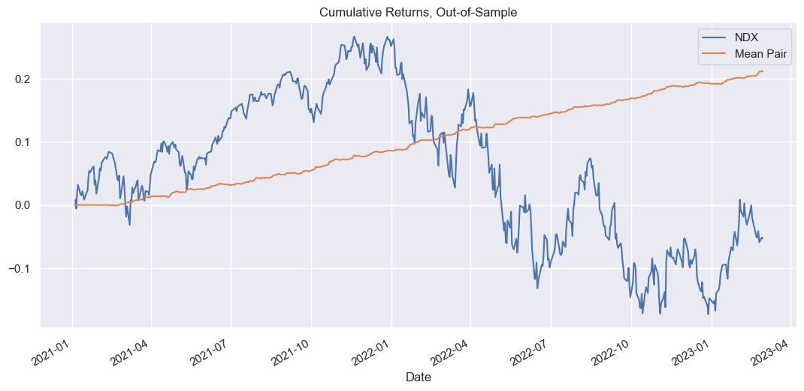If anything, I guess this is graphical representation of what a market-neutral strategy is.
Cointegration, Returns & Sector Analysis
Does same sector mean more likely to be cointegrated? This analysis assumes p-values are a measure of strength of effect, i.e the lower the p-value, the more significant an effect. I do not have enough knowledge in statistics to comment on this, so I just take it for granted. We can look in-sample at the empirical distributions of p-values for all pairs vs same-sector pairs:
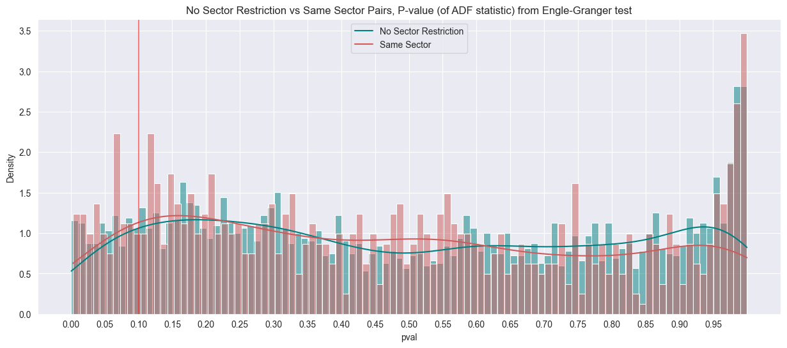Unfortunately, the difference seems to be very marginal. The KDE plots show only very minor differences. Which means that the proportion of cointegration is roughly the same!
Cointegration and Sharpe
How well does cointegration imply Sharpe? Ideally, we would run the strategy for all pairs (~4000), calculate their in-sample Sharpes, then compute the Spearman rank or Pearson correlation coefficient with p-values. Due to computation, I did this for the top and bottom deciles of p-value (<0.10 and >0.80) as a form of pseudo-quantile analysis.
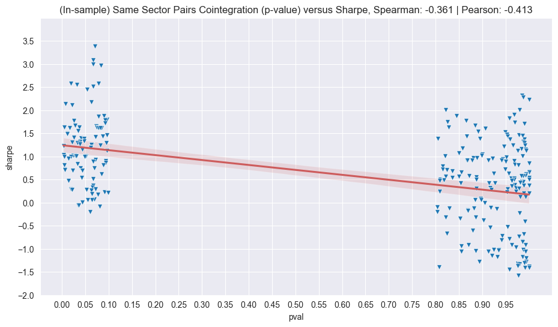I would have expected a stronger correlation. However (not shown here) I think the high Sharpe ratios of non-cointegrated pairs seem to be due to the power of the Kalman filter and my very simplistic backtest. When I plotted spreads of least cointegrated pairs, they all looked quite stationary, so I am attributing this to the Kalman filter.
Cointegration Out-of-Sample
To what extent does in-sample cointegration imply out-sample cointegration? Unfortunately, there is little to no relationship as demonstrated by the scatterplot:
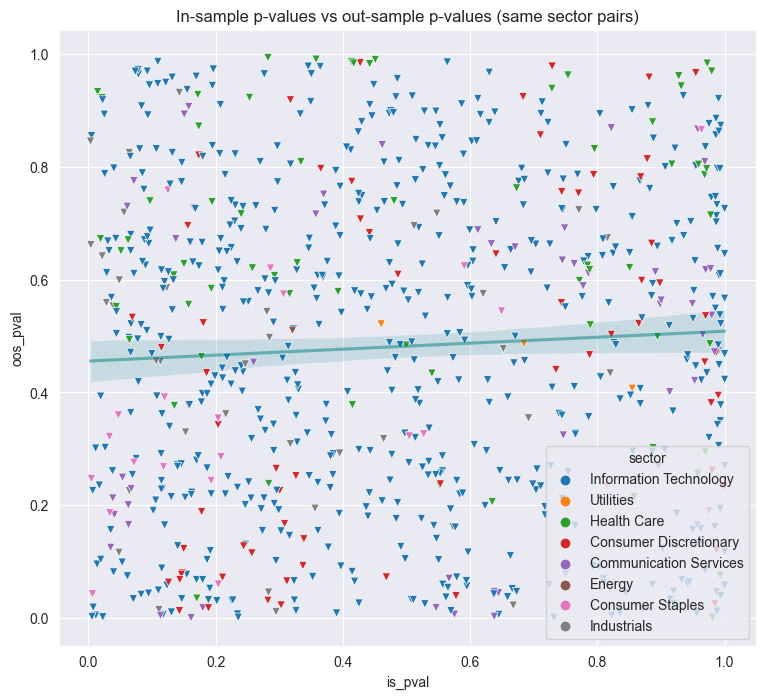There is no correlation, sadly, which does invalidate this whole project, since we are just trading random pairs that have no guarantee of being cointegrated. I suppose a better idea would be to try to predict future cointegration for a certain lookahead window (e.g features to predict the target which is a cointegration p-value) then trade pairs.
Conclusion
So unfortunately, it does seem that in-sample cointegration is a very poor predictor of out-sample cointegration, as seen by the scatter which looks like literally a 2D uniform random vector. It didn't even have the courtesy to look like white noise 😠 (e.g 2D Gaussian)!
This project has let me get basic exposure to quant trading and practicing what I have learned, it is amateurish but the main objective is to keep learning and improving consistently.